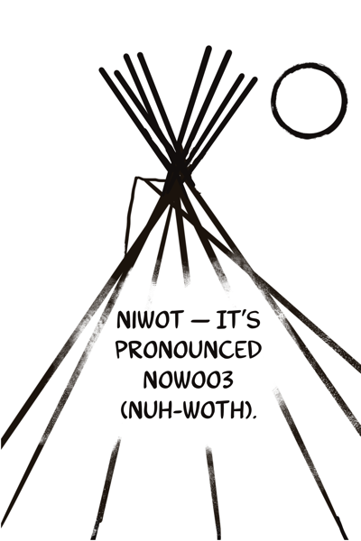
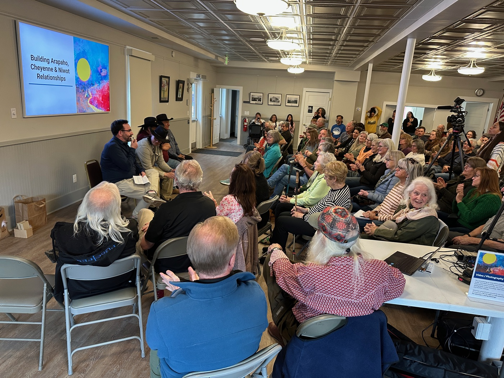
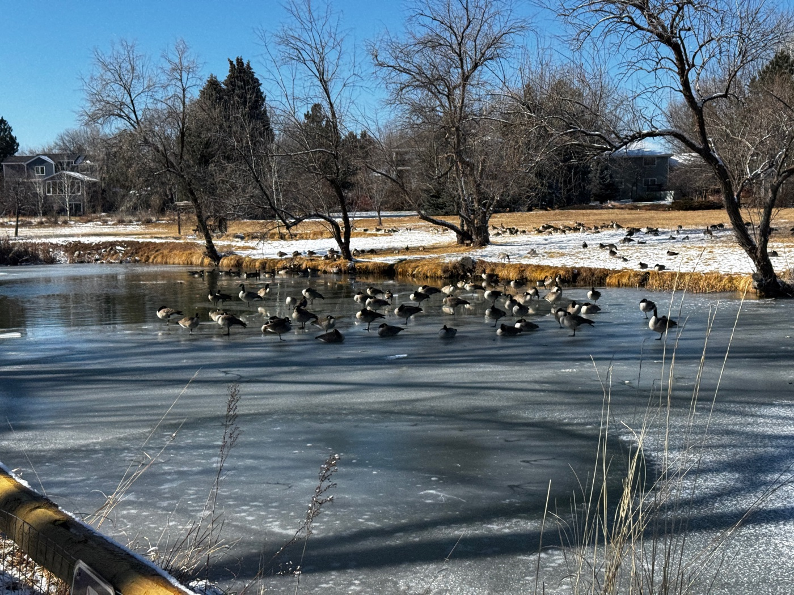

About the Festival
A town named for a bridge-builder.
Chief Nowoo³ (pronounced Nuh-woth) "Niwot" spoke multiple languages and chose dialogue over conflict at every turn. This festival is built in that spirit.
The name behind the name

Chief Nowoo³ (pronounced Nuh-woth) — known in English as "Niwot," meaning Left Hand — was a leader of the Southern Arapaho who wintered in the Boulder Valley with his people for generations. He spoke English, Cheyenne, and Lakota alongside his native Arapaho — learning English through his brother-in-law John Poisal, who had married Niwot's sister Snake Woman. He sought peace and dialogue at every turn, even as the forces around him made that choice increasingly costly.
The town of Niwot carries his name. This festival carries his spirit.
Why Niwot. Why now.
Niwot sits roughly fifteen minutes from downtown Boulder — close enough to be convenient, different enough to matter. While Boulder hosts major programming in its large venues, Niwot offers something that can't be replicated at scale: a walkable, historic small town with genuine community infrastructure, intimate venues, and a deep sense of place.
Niwot Hall — the oldest active Grange hall in Colorado, built in 1873 — is the soul of the town's gathering life today: concerts, weddings, artists, organizations. It was built for community storytelling. So were we.
The Southern Arapaho traditionally wintered in this valley. Hosting Indigenous filmmakers in the town named for their leader isn't a "diversity track" — it's a homecoming.
What we believe
Cinema, shared honestly in a room together, is one of the most powerful ways to build understanding. The most important stories are often the ones that don't have Hollywood budgets or festival buzz — the ones from communities whose voices get crowded out when the spotlight gets too bright.
We believe in radical accessibility. Free and pay-what-you-can screenings, unfiltered Q&As without PR handlers, filmmakers and audiences at the same table. Understanding cannot happen behind a velvet rope.
We believe in this place. Every business you support here is local. Every venue has a story. Every dollar stays in the community.
The five tracks
The festival runs five programming tracks, each with its own focus and curatorial identity. See the full program →
- The Left Hand Series — Indigenous filmmakers and stories
- The New Neighbors Showcase — Immigrant and diaspora voices
- Colorado Spotlight — Regional filmmakers and Colorado stories
- Environmental Track — Water, land, wildfire, and the West
- Youth Track — Films by Boulder Valley region students

Built on existing relationships
The Niwot Film Festival builds on years of community relationship-building that has honored Chief Nowoo³ (pronounced Nuh-woth) — including Niwot Native Art Markets and ongoing efforts to strengthen Arapaho-Cheyenne-Niwot ties. We are not starting from scratch. We are taking the next step.
Who's behind this
The Niwot Film Festival is organized by three community organizations with deep roots in Niwot and in Indigenous arts and culture:
- Niwot Cultural Arts Association — the primary arts and culture organization for the Niwot community
- Niwot Business Association — representing the independent businesses and merchants of Niwot
- Thunder Wolf Native Arts & Culture — a nonprofit supporting Indigenous artists and hosting Native Art Markets in the region
Niwot, Colorado
Niwot is a small, walkable historic town in Boulder County, about fifteen minutes northeast of downtown Boulder. Its heart is a two-block stretch of 2nd Avenue lined with independent shops, restaurants, breweries, and galleries. The Cottonwood Shopping Center adds to that fabric — a market, bookstore, tavern, and neighborhood restaurants that have been part of the community for generations. There are no chain stores here. Niwot Hall — built in 1873 as the Left Hand Grange No. 9 — is the soul of the community's gathering life today, hosting concerts, weddings, artists, and organizations year-round. The railroad came through Niwot before it came through Boulder; the grain elevators and agricultural roots are still visible in the landscape. Boulder County Open Space surrounds the town on multiple sides, putting trails, fields, and the floodplain of Left Hand Creek — named for Chief Niwot — within easy walking distance. It is, in short, exactly the kind of place a film festival should be: grounded, particular, and genuinely itself.
